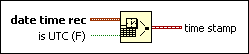

Date/Time To Seconds Function
Owning Palette: Timing VIs and Functions
Requires: Base Development System
Creates a timestamp from a set of individual values that specify a date and time.
Use the To Double Precision Float function to convert the timestamp value to a lower precision, floating-point number. The number is measured as the number of seconds that have elapsed since 12:00 a.m., Friday, January 1, 1904, Universal Time, assuming DST is set to 1.

 Add to the block diagram Add to the block diagram |
 Find on the palette Find on the palette |